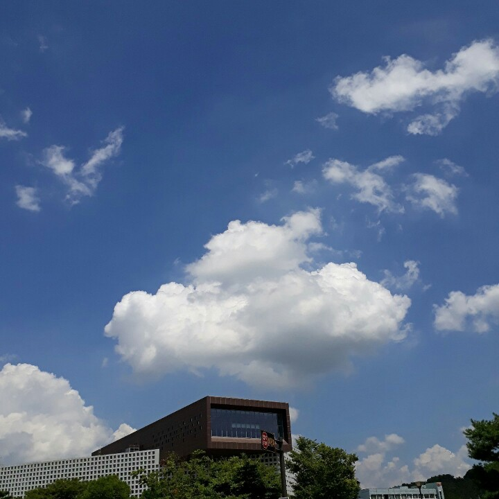
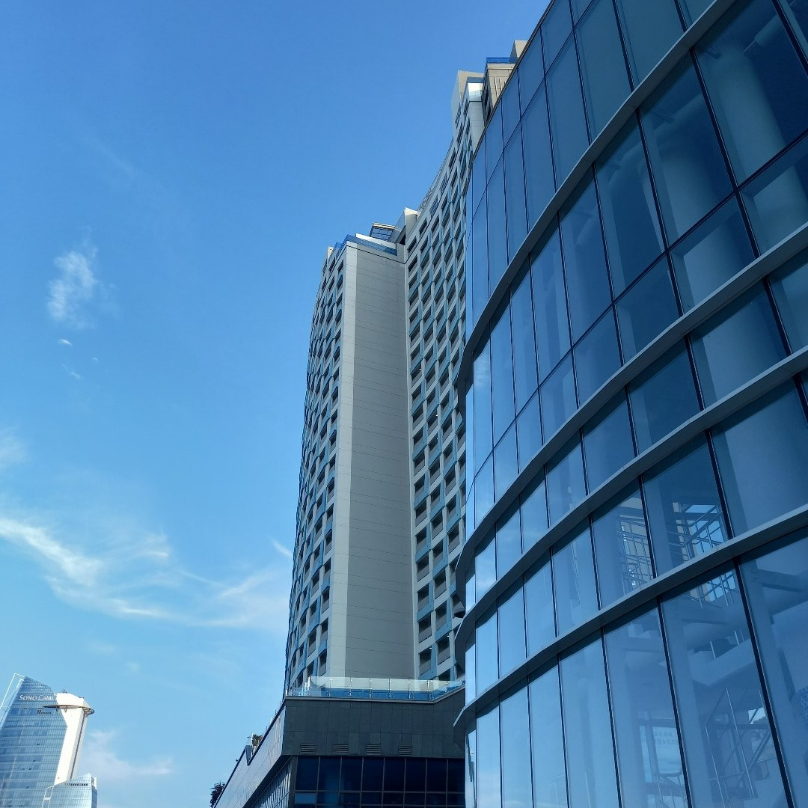
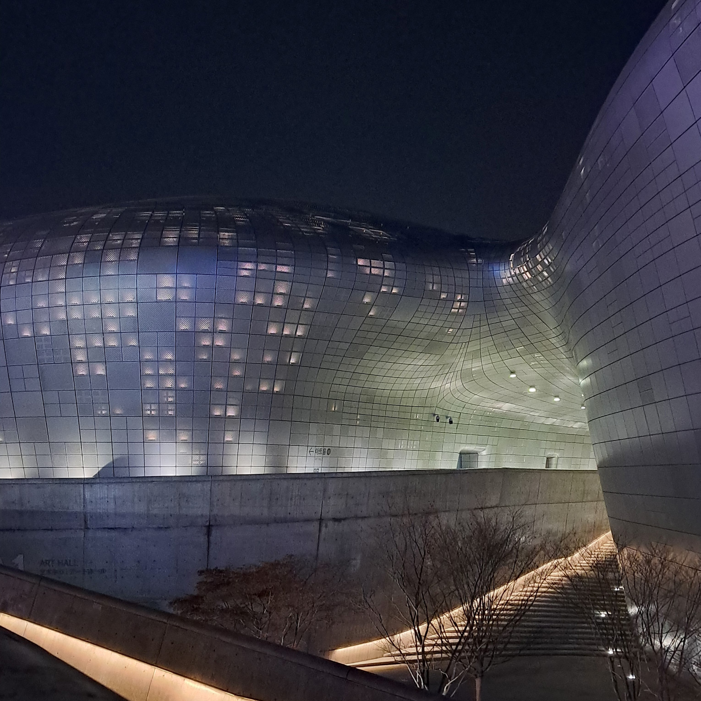

#주민을 더블클릭하고 유지해 주세요.
원예지의 섬
Residents
제가 가장 좋아하는 영화는 크리스토퍼 놀란 감독의 Inception이에요. Interstellar와 비슷한 결의 분위기를 가지지만 사람들이 잘 모르는 명작입니다.
꿈 속의 꿈 속의 꿈이라는 주제가 재밌기도 하고, 각각의 꿈을 이동하면서 벌어지는 사건들, 주인공의 트라우마로 인해 생기는 뇌 변화로 인한 오류 등등 감독이 오랫동안 준비해 온 시나리오인 만큼
볼 만한 가치가 충분하다고 생각해요. 크리스토퍼 놀란 감독의 시나리오나 영화 구성, 전하고자 하는 메시지들이 취향에 맞아서 가장 좋아하는 감독 또한 크리스토퍼 놀란 감독이에요.
이 영화를 제외하고도 다양한 SF 영화들을 좋아하고, 공학자라는 목표를 지니는 저로서는 더 재미있게 느껴지는 것 같아요.
2021년 12월 25일, 가족들이랑 다같이 영화관에 가서 Spiderman: No way home을 본 적이 있어요. 영화관에서 나올 때 눈이 내렸는데 그 순간의 장면이 아직도 좋은 기억으로 남아있습니다.
사소하더라도, 제가 좋아하는 사람들과 같이 보는 영화는 평생 남을 좋은 추억이 되는 것 같습니다.
예지
"도망쳐서 도착한 곳에 낙원은 없다."
"생각하는 대로 살지 않으면, 사는 대로 생각하게 된다."
저의 좌우명이기도 하고, 가장 좋아하는 말이기도 해요. 사실 좌우명은 현재 지키지 못하고 있는 것들, 보완해야 한다고 생각하는 것들을 나타내는 것 같아요.
무언가 힘든 일이 생길 때 다 포기하고 싶어질 때 이 문구를 생각하면서 다시 버팁니다.. 지금 순간을 벗어난다고 해서 더 좋은 결과나 상황이 따라오지 않는다는 것을 명심하고 그래도 할 수 있는만큼
노력하면 언젠가 끝이 오고 괜찮아지더라고요. 앞으로 인생에 힘든 일은 계속 생기겠지만 이성적으로 생각하고 삶을 주체적으로 살아가는 모습이 이상향인 것 같습니다.

왼쪽에 있는 사진은 오로라로 유명한 "아이슬란드" 사진이에요.
사계절 중에 겨울을 제일 좋아해서 스키나 스케이트같은 겨울 종목들을 좋아하는데
특유의 분위기와 맑은 날 밤이면 오로라를 볼 수 있다는 사실이 마음에 들었어요.
가족들과 아이슬란드에 가서 오로라를 추적하는 오로라 헌팅을 해보는 것이
살면서 꼭 해보고 싶은 목표 중 하나입니다.
# 오로라: 태양에서 방출된 입자들이 지구 극지방 자기장에 이끌려 대기로 진입하면서 공기분자와 반응하여 빛을 내는 현상 #


